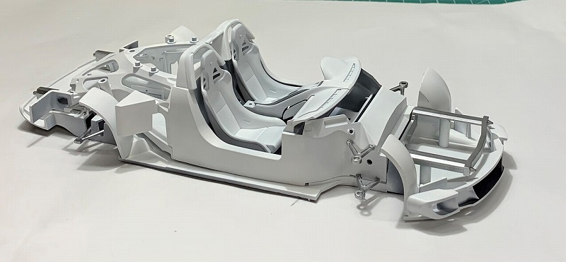
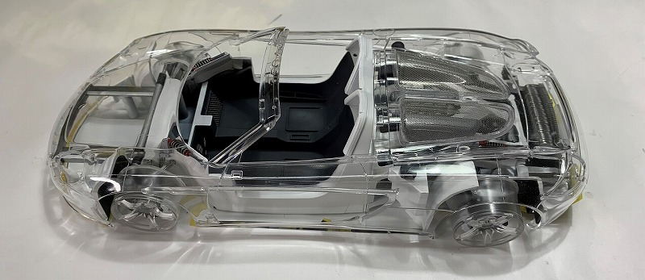
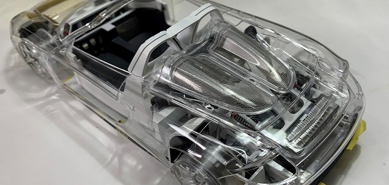
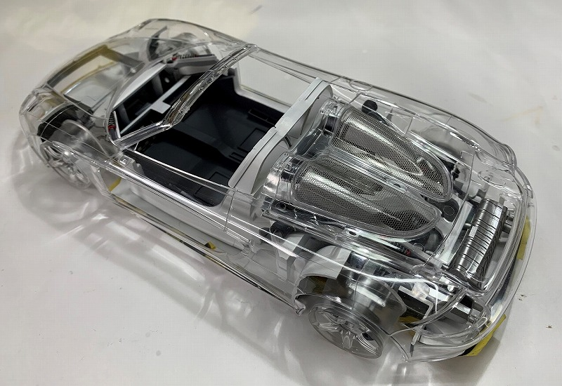
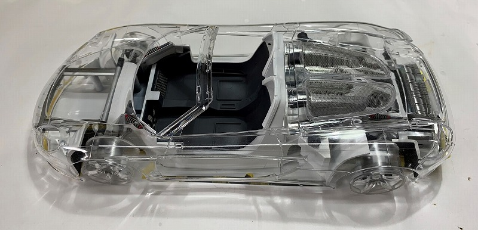
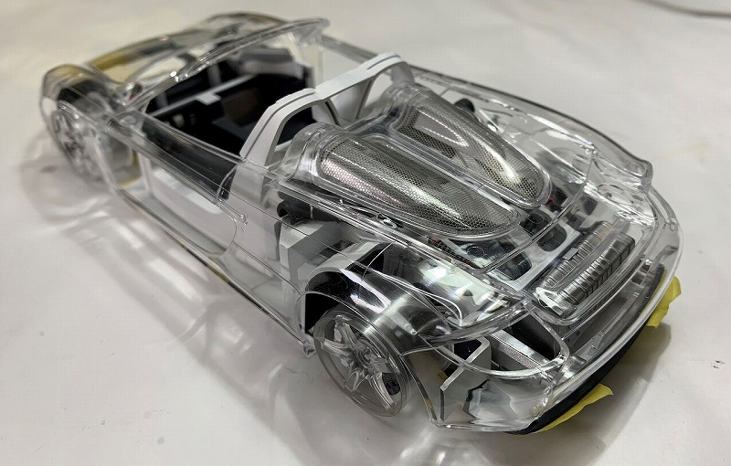

TAMIYA 1/24 Porsche Carrera GT Full-View
yahoo等で、「タミヤポルシェカレラＧＴフルビュー画像」で検索しますと、タミヤ社作成のクレイモデルを観ることができます。
当方も別のフルビューモデルを作製した事がありますが、説明書通りにシャシー部分を黒系統で塗装すると、透明ボディをかぶせても、けっこう中身が確認しずらい。
よって、今回は思い切ってシャシー部分を白、グレー系統で塗装し、中身の確認がしやすいか等を確認しながら作業を行います。
シャシー と モノコック －１

シャシーの内側（写真で見えている部分）、モノコックを全体的に白で塗装しています。
シャシー と モノコック －２

車内床周り、タイヤハウス裏はダークグレーで塗装。尚、後輪のタイヤハウスは、タイヤが上から確認できるように切断しています。
シャシー と モノコック －３

この時点で、室内を実際の車のように、赤系統で塗装するか悩みましたが、白・グレーなど無彩色の単式相の明暗で作製する事としました。
シャシー と モノコック －４
エンジン、サスを取り付ける前の状態で、記念の一枚。尚、エンジン周り、サスペンションは説明書通りの色で塗装しました。
フルビューボディを組み込んで確認 －１
ホイールを漂白したら、透明パーツであったのはうれしい誤算。サスペンションの赤色が効果的と思うが、どうでしょうか？
フルビューボディを組み込んで確認 －２
フルビューとは云え、やっぱり白いほうが内部は確認し易いですね＾＾；。ホイール周りもよく見えて、この状態で飾ってもＯＫかな？。タイヤはめると見えなくなるし・・。
フルビューボディを組み込んで確認 －３
なかなかいいんじゃないでしょうか・・。
フルビューボディを組み込んで確認 －４

フロントのトランク部分がスカスカですね！。どうしようかな・・色付けようかな・・。
パーティングラインも購入時のまま残ってます。ボディを無塗装で完了とするなら、パーティングラインがあってもいいんですが、塗装部分にそれがあると格好悪いですね・・。
フルビューボディを組み込んで確認 －５
フロントガラス周りは、塗装した方が、立体感がでるような気がします・・。
フルビューボディを組み込んで確認 －６
ボディのどこを塗りましょうかねえ・・。悩みます。
フルビューボディを組み込んで確認 －７

これからコクピット周りを組み込んでいきましょう。シートはライトグレーで塗装します。
コクピット周りを追加して確認 －１

コクピット周り と タイヤを組み込みました（前方から）。シートが思いの他明るい。周りの色と調和していますかね・・。赤に変更するか・・もう無理ですね。メータ周りは接着したし・・。
コクピット周りを追加して確認 －２

コクピット周り と タイヤを組み込みました（後方から）。ボディのどこを塗装するか決定しました。
これから塗装です。もうここには戻れない・・。